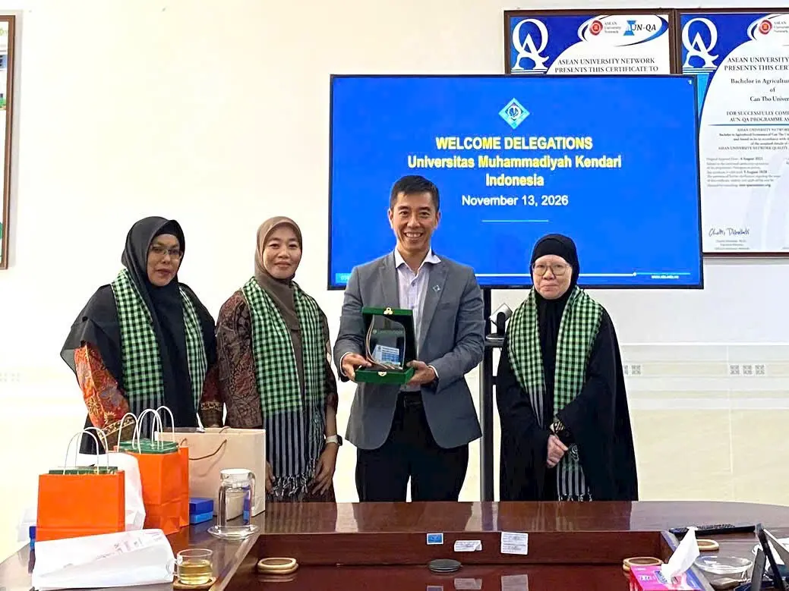
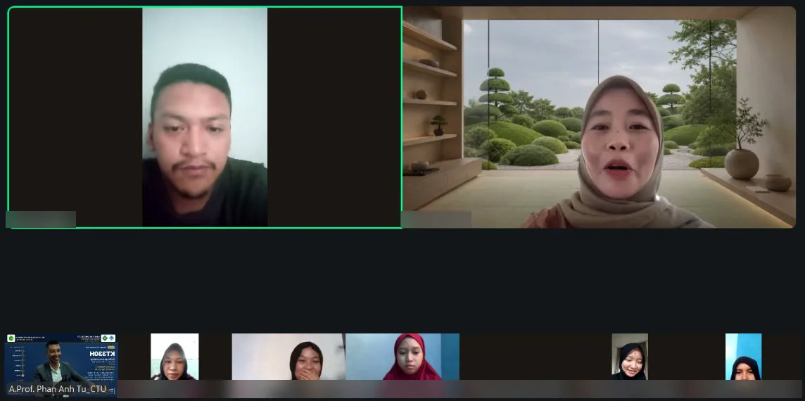
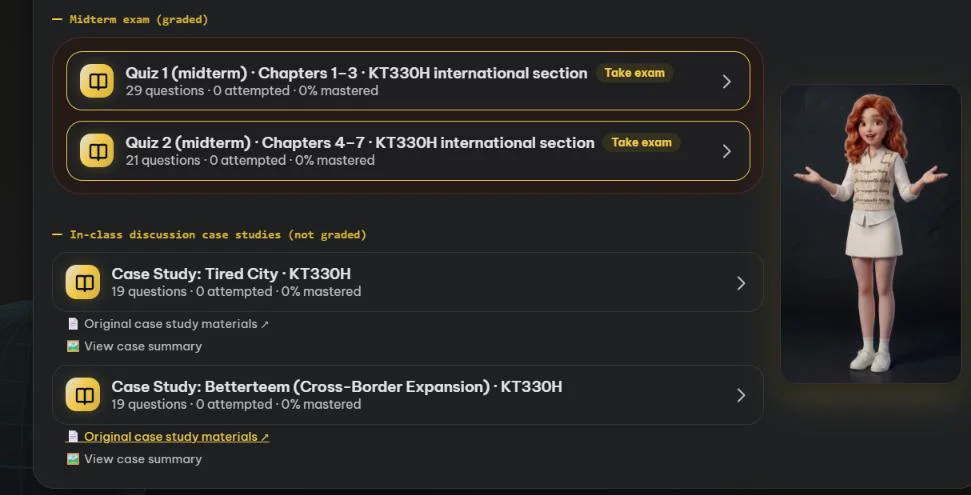

Kết quả tổng hợp, đã ẩn danh, từ một học phần đại học dùng trọn vẹn mô phỏng BizArena, tiền thân trực tiếp của BizOn. Học phần gồm các vòng chơi mô phỏng, sự kiện «Đại hội Cổ đông & Pitch xin vốn» và bài tiểu luận doanh nghiệp.
1Bối cảnh triển khai
Học phần
«Mô phỏng tình huống trong kinh doanh» (3 tín chỉ) – một trường đại học tại Đồng bằng sông Cửu Long, học kỳ 2 năm học 2025–2026
Giảng viên
NCS. Đỗ Thùy Hương – nhà sáng lập BizOn
Quy mô phân tích
40 sinh viên có đủ điểm toàn bộ cấu phần
Mô hình lớp học
Đội 5 vai (CEO–CFO–CMO–COO–Thư ký) · sự kiện «Đại hội Cổ đông & Pitch xin vốn» 150 phút – vốn được cấp trở thành két khởi điểm · chuỗi vòng mô phỏng BizArena (3 vòng tính điểm quá trình) · bài tiểu luận doanh nghiệp nhóm làm điểm kết thúc học phần
Công cụ
BizArena – mô phỏng 6 vòng, 5 đội, quyết định giá / sản lượng / marketing, biến cố ngẫu nhiên; là phiên bản tiền thân được nâng cấp thành BizOn hiện nay
2Kết quả tổng hợp (ẩn danh, n = 40)
Điểm quá trình QT1–QT3 chấm theo ba vòng chơi mô phỏng; KTHP là bài tiểu luận doanh nghiệp của mỗi nhóm.
+0,90
điểm tăng từ vòng 1 đến vòng 3 (8,31 → 8,62 → 9,21)
r ≈ 0,31
tương quan thuận giữa điểm chơi mô phỏng và điểm tiểu luận doanh nghiệp
98%
sinh viên đạt điểm học phần ≥ 8,0
Vòng chơi 1 (QT1)
8,31±0,48
Vòng chơi 2 (QT2)
8,62±0,54
Vòng chơi 3 (QT3)
9,21±0,71
Tiểu luận doanh nghiệp (KTHP)
8,49±0,47
Điểm tăng đều qua từng vòng. Điều này khớp với chu trình học qua trải nghiệm mà nền tảng được thiết kế để tạo ra: ra quyết định, xem hậu quả, rồi điều chỉnh.
Hai lớp KTM330HM01 và KTM330HM02 làm phiếu khảo sát trước và sau sáu vòng Bật Nghiệp, từ 15 đến 19/10/2026. Phiếu gồm 15 câu kiến thức (Phần A) và 8 câu về sự tự tin khi khởi nghiệp (Phần B). Số liệu phân tích ngày 07/11/2026 bằng công cụ phân tích công khai. Bảng đầy đủ: kết quả trước–sau, tháng 10/2026.
−0,02
điểm kiến thức, thang 15 (14,22 → 14,20): gần như không đổi, vì câu hỏi quá dễ nên điểm bị trần, tức đã sát mức tối đa (cỡ hiệu ứng d = −0,02, p ≈ 0,88)
42%
phiếu trước đã đạt điểm tối đa 15/15 (28 trên 67 phiếu); 84% đạt từ 14 điểm trở lên
+0,49
điểm tự tin, thang 40 (30,6 → 31,1): tăng nhẹ, chưa đủ chắc chắn về thống kê (cỡ hiệu ứng d_z = 0,25, p ≈ 0,09); lớp HM02 tăng rõ hơn (+0,72)
4,1/5
cho «phần giải thích Vì sao? giúp rút bài học», cao nhất trong 5 câu trải nghiệm; thấp nhất là «họp đội và cố vấn AI» 3,4/5
Cách đọc kết quả:
Chỉ có một nhóm, đo trước và sau; không có nhóm đối chứng (một lớp không chơi để so sánh). Vì vậy đây là mức thay đổi đo được, chưa phải tác động do BizOn gây ra.
Bộ câu hỏi kiến thức quá dễ với hai lớp này. Đợt sau cần câu khó hơn, nhắm điểm trung bình phiếu trước khoảng 9–10/15.
Đợt sau cũng cần một mã lớp thống nhất để ghép được nhiều cặp hơn: lần này 18 phiếu trước và 9 phiếu sau không ghép được.
Có giới thiệu game cho bạn bè không? Chỉ số NPS (tỷ lệ muốn giới thiệu trừ tỷ lệ không muốn) gộp hai lớp là −3, tức số không muốn giới thiệu nhiều hơn một chút. Điểm trung bình 7,2/10; lớp HM01 +14, lớp HM02 −14.
2cQuy mô sử dụng (số tổng cập nhật trực tiếp)
Số tổng đọc thẳng từ cơ sở dữ liệu lớp học mỗi lần mở trang. Chỉ trả về số đếm: không có mã lớp, tên đội hay email. Đã bỏ các lớp mẫu và lớp thử.
–
lớp đã dùng
–
đội chơi Bật Nghiệp
–
đội chơi đủ 6 vòng
–
ván Bến Phù Sa đã nộp
–
ván Hộ Chiếu Thương Hiệu đã nộp
Tính từ ngày–. Đây là số liệu sử dụng, không phải kết quả học tập; kết quả học tập ở mục 2 và 2b.
2dNguồn của từng con số
Mỗi con số trên trang này và mỗi tham số trong game đều có nguồn dữ liệu, cách thu, mức công khai và giới hạn chính. Bảng dưới đặt chúng cạnh nhau để người đọc tự đánh giá mỗi con số tin được đến đâu.
Con số
Dữ liệu gốc
Thu thế nào
Mức công khai
Giới hạn chính
Mục 2 · n = 40
Dữ liệu gốcBảng điểm học phần «Mô phỏng tình huống trong kinh doanh», HK2 2025–2026: ba điểm quá trình QT1–QT3 (ba vòng BizArena) và điểm tiểu luận nhóm KTHP.
Thu thế nàoGiảng viên trích sau khi học phần kết thúc, bỏ họ tên và mã sinh viên. Chỉ giữ sinh viên có đủ cả bốn điểm.
Mức công khaiChỉ công bố số tổng hợp. Điểm từng sinh viên không công khai.
Giới hạn chínhHồi cứu, không có nhóm đối chứng. Điểm dồn trần (98 % ≥ 8,0) nên tương quan bị nén. Với n = 40, r ≈ 0,31 có khoảng tin cậy 95 % xấp xỉ từ 0,00 đến 0,57 (p ≈ 0,05): chưa loại được khả năng không có tương quan. Sinh viên thiếu một điểm bị loại khỏi mẫu, có thể gây lệch chọn mẫu.
Mục 2b · 49 cặp
Dữ liệu gốcPhiếu trước–sau trên BizOn của hai lớp KTM330HM01 và KTM330HM02: 15 câu kiến thức và 8 câu tự tin.
Thu thế nàoSinh viên tự điền từ 15 đến 19/10/2026. Gói dữ liệu ẩn danh tải từ Trang Giảng viên ngày 07/11/2026 và ghép cặp theo mã.
Giới hạn chínhMột nhóm, không đối chứng. Bộ câu kiến thức bị trần (42 % phiếu trước đạt 15/15). 27 phiếu không ghép được cặp. Tự tin là tự đánh giá.
Mục 2c · quy mô
Dữ liệu gốcCơ sở dữ liệu lớp học của BizOn: các lượt nộp vòng Bật Nghiệp, ván Bến Phù Sa và Hộ Chiếu Thương Hiệu.
Thu thế nàoĐếm trực tiếp mỗi lần mở trang, tính từ 29/07/2026. Bỏ các lớp có mã DEMO hoặc TEST.
Mức công khaiChỉ trả về số đếm. Mã hàm đếm công khai.
Giới hạn chínhLà số sử dụng, không phải kết quả học tập. Đếm lớp, đội và ván, không phải số người học: một đội có nhiều người, một người có thể ở nhiều lớp.
Tham số Hộ Chiếu Sầu Riêng
Dữ liệu gốc27 tham số trong tệp dữ liệu của game, mỗi tham số ghi nguồn: nghị định thư kiểm dịch Việt Nam – Trung Quốc (2022), báo cáo thị trường rau quả của Bộ Công Thương (2023–2024), các nghiên cứu chuỗi cung ứng sầu riêng ở Cai Lậy, Phong Điền, Thái Lan, Malaysia (12 tài liệu).
Thu thế nàoNhóm thiết kế đọc tài liệu và neo mỗi tham số vào một con số cụ thể. Một bài kiểm thử tự động giữ bảng công bố luôn khớp với mã.
Giới hạn chính8 tham số có nguồn, 8 hỗn hợp, 11 minh hoạ. Minh hoạ nghĩa là nhóm thiết kế chọn để định thang và giữ cân bằng, không phải ước lượng thực tế. Giá trị có nguồn là một điểm neo từ tài liệu, chưa được ước lượng thống kê từ chuỗi số liệu nhiều năm.
Tham số Bật Nghiệp, Bến Phù Sa
Dữ liệu gốcCơ chế công bố ở thẻ mô hình: cầu theo giá, chia thị phần, dòng tiền, đối thủ ảo, hành trang hành trình.
Thu thế nàoDo nhóm thiết kế đặt để game cân bằng và dễ dạy. Engine tất định: cùng đầu vào luôn cho cùng kết quả.
Giới hạn chínhChưa có bảng nguồn cho từng tham số như Hộ Chiếu Sầu Riêng. Kết quả trong game là để học cách ra quyết định, không phải dự báo thị trường thật.
Khoảng tin cậy của r tính bằng phép biến đổi Fisher z trên giá trị đã làm tròn r ≈ 0,31, nên hai đầu khoảng là xấp xỉ.
3Giới hạn của bằng chứng hiện có
Hồi cứu, không có pre-test:chưa tách được hiệu ứng của mô phỏng khỏi hiệu ứng luyện tập và giảng dạy nói chung.
Điểm số không thuần đo học tập:điểm quá trình phản ánh cả tiêu chí tham gia và làm việc nhóm; phân bố dồn trần (độ lệch chuẩn nhỏ) làm hệ số tương quan bị nén.
Một lớp, một giảng viên(đồng thời là đồng tác giả nền tảng) – cần lặp lại ở lớp và người dạy khác.
Bước kế tiếp đã chuẩn bị xong:các lớp pilot tiếp theo dùng bộ pre-test/post-test 15 câu khớp ma trận chuẩn đầu ra, đo Δ kiến thức và Δ tự tin theo từng cụm – thiết kế trước–sau có mốc so sánh.
Nguyên tắc bằng chứng:«đo được» không đồng nghĩa «do BizOn gây ra». Kết quả dài hạn được công bố bằng ngôn ngữ đóng góp («BizOn góp phần thúc đẩy…»), theo tiếp cận phân tích đóng góp của Mayne (2012).Lộ trình bốn mắt xích →
4Ba lớp kế tiếp đã có kế hoạch tích hợp
KT330H – Entrepreneurship
ĐH Cần Thơ
Simulation thứ 2 trong cấu phần «Simulation Games 10%»; nối workshop hòa vốn Excel tuần 8; pre/post-test tuần 2 và 11
KT301H – FDI, Trade & Geography (CLC)
ĐH Cần Thơ
Bậc 3 · Quốc tế hóa cho chương Entry Modes; slide «mô phỏng đối chiếu» trong thuyết trình case; giảng dạy song ngữ
KT330H – Entrepreneurship (lớp quốc tế)
UM Kendari × ĐH Cần Thơ
Chương trình trao đổi tín chỉ quốc tế với Universitas Muhammadiyah Kendari (Indonesia), học trực tuyến qua Zoom ngày 17–19/11/2026 do PGS.TS. Phan Anh Tú giảng dạy; 160 sinh viên, 32 đội. Buổi chơi: thứ Năm 19/11/2026 – đội 5 vai chơi Bật Nghiệp 3D trong phòng nhóm; game (đã có giọng đọc tiếng Anh), video hướng dẫn và phiếu khảo sát trước–sau đều bằng tiếng Anh

PGS.TS. Phan Anh Tú đón đoàn Universitas Muhammadiyah Kendari tại Đại học Cần Thơ, 13/11/2026.
Workshop giao lưu học thuật · 13/11/2026
Chủ đề: «Kinh nghiệm hợp tác quốc tế và nghiên cứu kinh tế nông nghiệp bền vững».
Địa điểm: Hội trường 101, Trường Kinh tế, Đại học Cần Thơ.
Đoàn UM Kendari có ba giảng viên: TS. Sitti Rahma Ma’mun (Giám đốc Nghiên cứu, Công nghệ và Phục vụ cộng đồng), TS. Asriani (Trưởng bộ môn Công nghệ Công nghiệp Nông nghiệp) và TS. Titin Rahmiatin Rahim (Giám đốc phụ trách Hợp tác và Quốc tế).
Đoàn giao lưu với sinh viên, giảng viên, cùng PGS.TS. Phan Anh Tú (Phó Hiệu trưởng Trường Kinh tế) và PGS.TS. Khổng Tiến Dũng (Khoa Kinh tế nông nghiệp).
Nội dung gồm môi trường học tập và nghiên cứu tại UM Kendari, cơ hội trao đổi sinh viên, nghiên cứu kinh tế nông nghiệp bền vững.
Buổi chiều, đoàn tham quan tòa nhà RLC của Trường.
PGS.TS. Phan Anh Tú trao giấy chứng nhận cho ba giảng viên UM Kendari.Đoàn UM Kendari, giảng viên và sinh viên Trường Kinh tế tại Hội trường 101.
Ảnh: Cẩm Trắt · Bài: Yến Nhi – Ban Thông tin và Truyền thông Đoàn trường Kinh tế.
Lớp học qua Zoom · 17–19/11/2026
Buổi 1 môn KT330H Khởi nghiệp (17/11/2026): thầy Phan Anh Tú giảng trực tuyến cho lớp trao đổi tín chỉ ĐH Cần Thơ – UM Kendari, 98 người tham gia trên Zoom (đã làm mờ họ tên).

Sinh viên và giảng viên UM Kendari tham gia trao đổi (đã làm mờ họ tên).

Sinh viên thi hai bài Quiz giữa kỳ (chương 1–3, 4–7) trên EnQuiz; kèm hai tình huống thảo luận trên lớp.
Hai thí điểm tại ĐH Cần Thơ sẽ bổ sung phiếu ghi lại ba điều: quyết định kinh doanh của người học; các bước họ thử cơ hội ngoài đời thật (phỏng vấn khách hàng, thử giá, làm sản phẩm mẫu tối thiểu – MVP, tìm đối tác); và nơi họ chọn lập nghiệp. Mục đích là tách quyết định trong mô phỏng khỏi hành động ngoài thực tế.
5Truyền thông & báo chí
Các lần đội ngũ sáng lập BizOn xuất hiện trên báo chí với tư cách chuyên gia – minh chứng cho nền tảng học thuật đứng sau dự án.
Tuổi Trẻ Online · 22/10/2026
«Miền Tây thiếu lao động – Kỳ 1: Doanh nghiệp "thưởng chuyên cần" để giữ chân lao động»
Kỳ mở đầu loạt bài về cuộc đua giữ chân lao động của doanh nghiệp miền Tây (thưởng chuyên cần, quỹ cho vay không lãi). Trong hộp ý kiến «Cần hiểu đúng về "miền Tây thiếu lao động"», trước đề xuất nhập khẩu lao động cho doanh nghiệp ở miền Tây, PGS.TS. Phan Anh Tú cho rằng chưa cần nhập khẩu lao động phổ thông đại trà.
«Cần Thơ tìm giải pháp chuyển đổi số, chuyển đổi xanh cho doanh nghiệp»
Đưa tin diễn đàn: PGS.TS. Phan Anh Tú đề xuất liên kết chặt hơn giữa chính quyền, doanh nghiệp và trường đại học; doanh nghiệp cùng xây dựng chương trình đào tạo và cùng đánh giá sinh viên.
«Cần Thơ nâng cao chất dòng vốn FDI, tạo động lực tăng trưởng mới»
Phỏng vấn PGS.TS. Phan Anh Tú về việc FDI tại Cần Thơ mới là một "trụ đỡ" ổn định chứ chưa trở thành động lực tăng trưởng mới, cùng khuyến nghị xây dựng bộ hồ sơ "sẵn sàng đầu tư" cho từng khu công nghiệp.
Bản quyền mỗi bài viết thuộc về tòa soạn đăng bài. BizOn chỉ dẫn nguồn và tóm tắt, không đăng lại toàn văn. Phóng viên: Bnews (TTXVN) – Nguyễn Văn Việt; Tuổi Trẻ Online – Ca Linh – Khắc Tâm, Chí Quốc; VietnamPlus (TTXVN) – Nguyễn Văn Việt; Tạp chí Một Thế Giới – Văn Kim Khanh.
Muốn chạy pilot tại đơn vị của bạn?
Bộ công cụ triển khai trọn gói đã sẵn sàng: kịch bản buổi học & giải đấu, rubric, phiếu đo lường trước–sau và hệ thống ghi nhận kết quả tập trung.